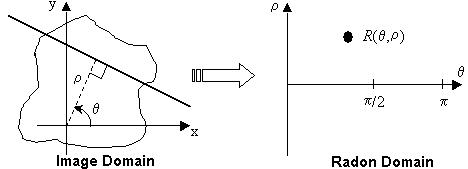
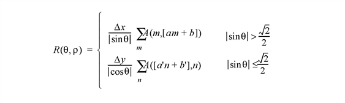
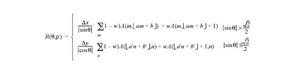
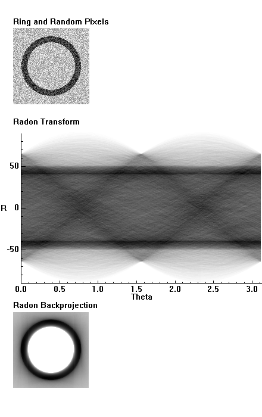

The RADON function implements the Radon transform, used to detect features within a two-dimensional image. This function can be used to return either the Radon transform, which transforms lines through an image to points in the Radon domain, or the Radon backprojection, where each point in the Radon domain is transformed to a straight line in the image.
The Radon transform is used to detect features within an image. Given a function A ( x , y ), the Radon transform is defined as:
This equation describes the integral along a line s through the image, where ρ is the distance of the line from the origin and θ is the angle from the horizontal.
|
 |
In medical imaging, each point R (θ, ρ) is called a ray-sum, while the resulting image is called a shadowgram. An image can be reconstructed from its ray-sums using the backprojection operator:
where the output, B ( x , y ), is an image of A ( x , y ) blurred by the Radon transform.
To avoid the use of a two-dimensional interpolation and decrease the interpolation errors, the Radon transform equation is rotated by θ, and the interpolation is then done along the line s . The transform is divided into two regions, one for nearly-horizontal lines (θ ≤ 45°; 135° ≤ θ ≤ 180°), and the other for steeper lines (45° < θ < 135°), where θ is assumed to lie on the interval [0°, 180°].
For nearest-neighbor interpolation (the default), the discrete transform formula for an image A ( m , n ) [ m = 0, ..., M –1, n = 0, ..., N –1] is:

where brackets [ ] indicate rounding to the nearest integer, and the slope and offsets are given by:
For linear interpolation, the transform is:

where the slope and offsets are the same as above, and the lower-half brackets indicate flooring to the nearest lower integer. The weighting w is given by the difference between a'n + b' and its floored value, or between a’n + b’ and its floored value.
For the backprojection transform, the discrete formula for nearest-neighbor interpolation is:
with the nearest-neighbor for ρ given by:
For backprojection with linear interpolation:
and ρ is the same as in the nearest-neighbor.
Radon Transform:
Result = RADON( Array [, / DOUBLE ] [, DRHO = scalar ] [, DX = scalar ] [, DY = scalar ] [, / GRAY ] [, / LINEAR ] [, NRHO = scalar ] [, NTHETA = scalar ] [, RHO = variable ] [, RMIN = scalar ] [, THETA = variable ] [, XMIN = scalar ] [, YMIN = scalar ] )
Radon Backprojection:
Result = RADON( Array, / BACKPROJECT , RHO = variable , THETA = variable [, / DOUBLE ] [, DX = scalar ] [, DY = scalar ] [, / LINEAR ] [, NX = scalar ] [, NY = scalar ] [, XMIN = scalar ] [, YMIN = scalar ] )
The result of this function is a two-dimensional floating-point array, or a complex array if the input image is complex. If Array is double-precision, or if the DOUBLE keyword is set, the result is double-precision, otherwise, the result is single-precision.
The two-dimensional array of size M by N to be transformed.
If set, the backprojection is computed, otherwise, the forward transform is computed.
Note: The Radon backprojection does not return the original image. Instead, it returns an image blurred by the Radon transform. Because the Radon transform is not one-to-one, multiple ( x , y ) points are mapped to a single (θ, ρ).
Set this keyword to force the computation to be done using double-precision arithmetic.
Set this keyword equal to a scalar specifying the spacing between ρ coordinates, expressed in the same units as Array . The default is one-half of the diagonal distance between pixels, 0.5[(DX 2 + DY 2 )] 1/2 . Smaller values produce finer resolution, and are useful for zooming in on interesting features. Larger values may result in undersampling, and are not recommended. If BACKPROJECT is specified, this keyword is ignored.
Set this keyword equal to a scalar specifying the spacing between the horizontal ( x ) coordinates. The default is 1.0.
Set this keyword equal to a scalar specifying the spacing between the vertical ( y ) coordinates. The default is 1.0.
Set or omit this keyword to perform a weighted Radon transform, with the weighting given by the pixel values. If GRAY is explicitly set to zero, the image is treated as a binary image with all nonzero pixels considered as 1.
Set this keyword to use linear interpolation rather than the default nearest-neighbor sampling. Results are more accurate but slower when linear interpolation is used.
Set this keyword equal to a scalar specifying the number of ρ coordinates to use. The default is 2 CEIL([MAX(x 2 + y 2 )] 1/2 / DRHO) + 1. If BACKPROJECT is specified, this keyword is ignored.
Set this keyword equal to a scalar specifying the number of θ coordinates to use over the interval [0, π]. The default is CEIL(π[(M 2 + N 2 )/2] 1/2 ). Larger values produce smoother results, and are useful for filtering before backprojection. Smaller values result in broken lines in the transform, and are not recommended. If BACKPROJECT is specified, this keyword is ignored.
If BACKPROJECT is specified, set this keyword equal to a scalar specifying the number of horizontal coordinates in the output Result . The default is FLOOR(2 MAX(|RHO|)(DX 2 + DY 2 ) -1/2 + 1). For the forward transform this keyword is ignored.
If BACKPROJECT is specified, set this keyword equal to a scalar specifying the number of vertical coordinates in the output Result . The default is FLOOR(2 MAX(|RHO|)(DX 2 + DY 2 ) -1/2 + 1). For the forward transform, this keyword is ignored.
For the forward transform, set this keyword to a named variable that will contain the radial (ρ) coordinates, in units defined by the DX and DY keywords (pixels by default). If BACKPROJECT is specified, this keyword must contain the ρ coordinates of the input Array . The ρ coordinates should be evenly spaced and in increasing order.
Set this keyword equal to a scalar specifying the minimum ρ coordinate to use for the forward transform. The default is –0.5(NRHO – 1) DRHO. If BACKPROJECT is specified, this keyword is ignored.
For the forward transform, set this keyword to a named variable containing a vector of angular (θ) coordinates (in radians) to use for the transform. If NTHETA is specified instead, and THETA is set to a named variable, on exit THETA will contain the θ coordinates. If BACKPROJECT is specified, this keyword must contain the θ coordinates of the input Array .
Set this keyword equal to a scalar specifying the x -coordinate of the lower-left corner of the input Array . The default is – ( M– 1)/2, where Array is an M by N array. If BACKPROJECT is specified, set this keyword equal to a scalar specifying the x ‑coordinate of the lower-left corner of the Result . In this case the default is -DX (NX-1)/2.
Set this keyword equal to a scalar specifying the y -coordinate of the lower-left corner of the input Array . The default is – ( N– 1)/2, where Array is an M by N array. If BACKPROJECT is specified, set this keyword equal to a scalar specifying the y -coordinate of the lower-left corner of the Result . In this case, the default is -DY (NY-1)/2.
Example Code: The code for this example is included in the file radon_doc.pro in the examples/doc/language subdirectory of the IDL distribution. Run this example procedure by entering radon_doc at the IDL command prompt or view the file in an IDL Editor window by entering .EDIT radon_doc.pro .
This example displays the Radon transform and the Radon backprojection:
PRO radon_doc
DEVICE, DECOMPOSED=0
;Create an image with a ring plus random noise:
x = (LINDGEN(128,128) MOD 128) - 63.5
y = (LINDGEN(128,128)/128) - 63.5
radius = SQRT(x^2 + y^2)
array = (radius GT 40) AND (radius LT 50)
array = array + RANDOMU(seed,128,128)
;Create display window, set graphics properties:
WINDOW, XSIZE=440,YSIZE=700, TITLE='Radon Example'
!P.BACKGROUND = 255 ; white
!P.COLOR = 0 ; black
!P.FONT=2
ERASE
XYOUTS, .05, .94, 'Ring and Random Pixels', /NORMAL
;Display the image. 255b changes black values to white:
TVSCL, 255b - array, .05, .75, /NORMAL
;Calculate and display the Radon transform:
XYOUTS, .05, .70, 'Radon Transform', /NORMAL
result = RADON(array, RHO=rho, THETA=theta)
TVSCL, 255b - result, .08, .32, /NORMAL
PLOT, theta, rho, /NODATA, /NOERASE, $
POSITION=[0.08,0.32, 1, 0.68], $
XSTYLE=9,YSTYLE=9,XTITLE='Theta', YTITLE='R'
;For simplicity in this example, remove everything but
;the two stripes.
result[*,0:55] = 0
result[*,73:181] = 0
result[*,199:*] = 0
;Find the Radon backprojection and display the output:
XYOUTS, .05, .26, 'Radon Backprojection', /NORMAL
backproject = RADON(result, /BACKPROJECT, RHO=rho, THETA=theta)
TVSCL, 255b - backproject, .05, .07, /NORMAL
END
The following figure displays the program output. The top image is an image of a ring and random pixels, or noise. The center image is the Radon transform, and displays the line integrals through the image. The bottom image is the Radon backprojection, after filtering all noise except for the two strong horizontal stripes in the middle image.
|
 |
Note: A better (and more complicated) method than removing everything but the two stripes is to choose a threshold for the result at each value of theta, perhaps based on the average of the result over the theta dimension.
| 1. | Herman, Gabor T. Image Reconstruction from Projections . New York: Academic Press, 1980. |
| 2. | Hiriyannaiah, H. P. X-ray computed tomography for medical imaging. IEEE Signal Processing Magazine, March 1997: 42-58. |
| 3. | Jain, Anil K. Fundamentals of Digital Image Processing . Englewood Cliffs, NJ: Prentice-Hall, 1989. |
| 4. | Toft, Peter. The Radon Transform: Theory and Implementation . Denmark: Technical University; 1996. Ph.D. Thesis. |
|
5.4 |
Introduced |